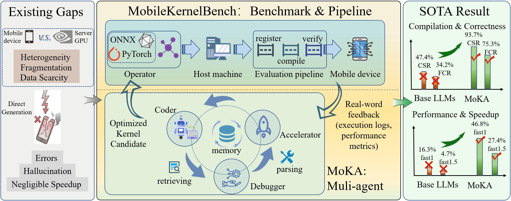
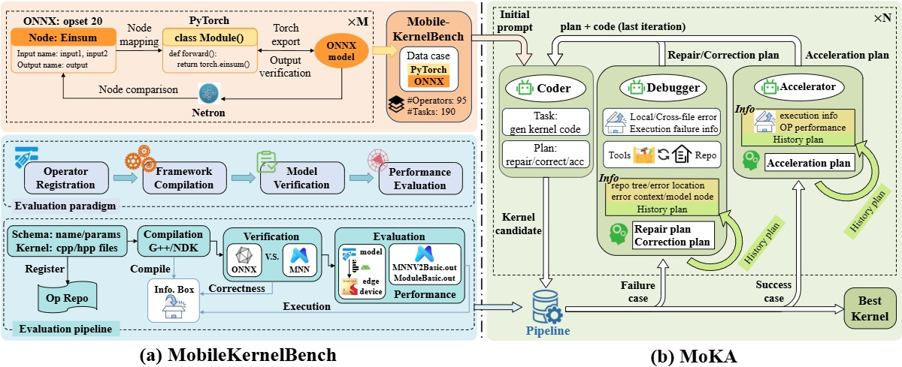
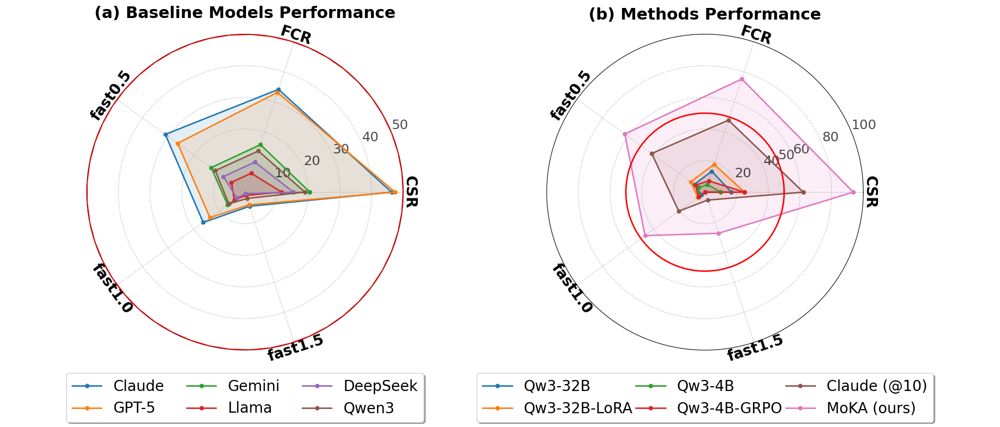
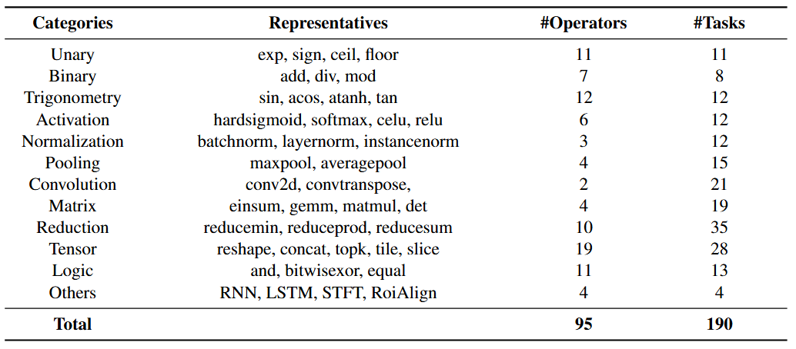
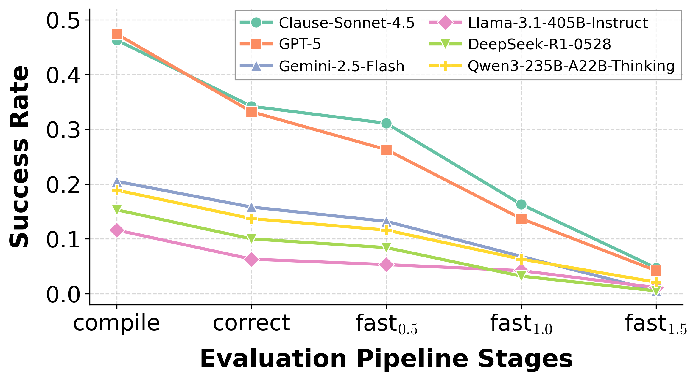
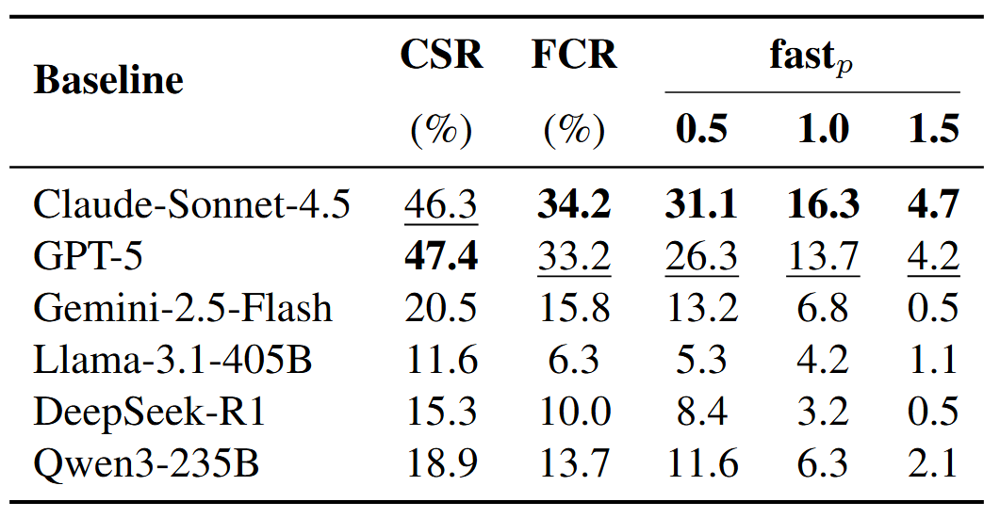
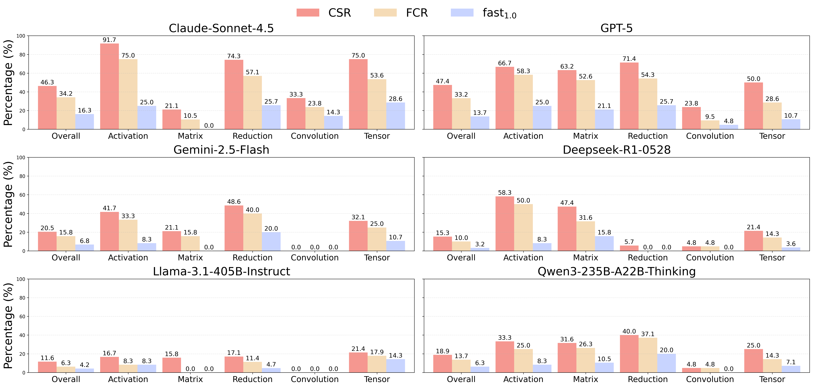
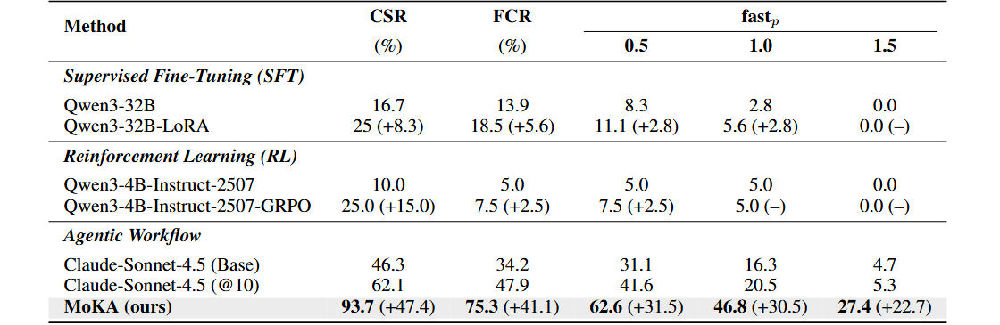
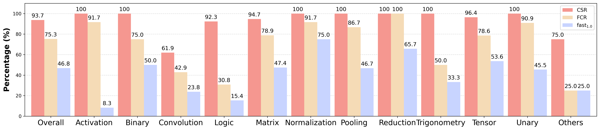
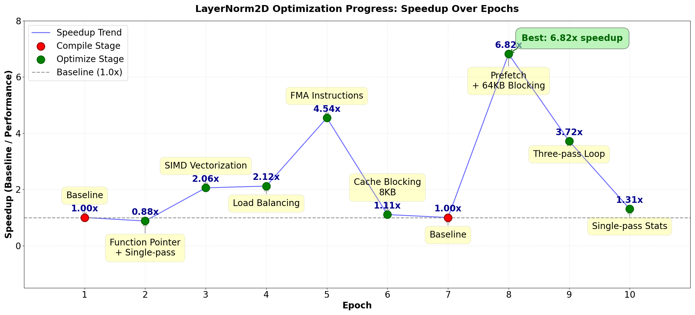

MobileKernelBench: Can LLMs Write Efficient Kernels for Mobile Devices?

Overview. Large language models (LLMs) have recently shown strong potential in generating performance-optimized CUDA kernels for server-grade GPUs. However, their applicability to mobile kernel development remains largely unexplored. Compared with GPU kernels, mobile-side kernel development exhibits several fundamental gaps. First, compatibility priority: mobile frameworks must support a wide spectrum of operators to ensure cross-framework model migration. Second, engineering complexity: the fragmented mobile ecosystem requires developers to target heterogeneous hardware backends and architectures. Third, data scarcity: the lack of high-quality reference implementations in mobile inference frameworks creates a data-poor environment that limits LLM generalization.
To study this problem, we introduce MobileKernelBench, a benchmark and automated evaluation pipeline designed for mobile frameworks. The benchmark emphasizes operator diversity, containing 190 tasks across 95 primitive operators, while the pipeline automates the full workflow from registration and cross-compilation to on-device verification.
Building on this framework, we propose MoKA (Mobile Kernel Agent), a multi-agent system that performs multi-round planning for compilation, correctness verification, and performance optimization. Experiments on the MNN framework show that MoKA achieves state-of-the-art performance, reaching 93.7% compilation success, strong functional correctness, and 27.4% performance speedups, significantly outperforming existing LLM baselines for mobile kernel generation.
Abstract
Large language models (LLMs) have demonstrated remarkable capabilities in code generation, yet their potential for generating kernels specifically for mobile devices remains largely unexplored. In this work, we extend the scope of automated kernel generation to the mobile domain to investigate the central question: Can LLMs write efficient kernels for mobile devices? To enable systematic investigation, we introduce MobileKernelBench, a comprehensive evaluation framework comprising a benchmark prioritizing operator diversity and cross-framework interoperability, coupled with an automated pipeline that bridges the host-device gap for on-device verification. Leveraging this framework, we conduct extensive evaluation on the CPU backend of Mobile Neural Network (MNN), revealing that current LLMs struggle with the engineering complexity and data scarcity inherent to mobile frameworks; standard models and even fine-tuned variants exhibit high compilation failure rates (over 54%) and negligible performance gains due to hallucinations and a lack of domain-specific grounding. To overcome these limitations, we propose the Mobile Kernel Agent (MoKA), a multi-agent system equipped with repository-aware reasoning and a plan-and-execute paradigm. Validated on MobileKernelBench, MoKA achieves state-of-the-art performance, boosting compilation success to 93.7% and enabling 27.4% of generated kernels to deliver measurable speedups over native libraries.
Method Overview

System Architecture Overview. The system consists of two core components: (a) MobileKernelBench, which establishes the evaluation environment by integrating a target-driven data curation process with an automated, hardware-in-the-loop evaluation pipeline; and (b) MoKA, a multi-role agentic system where Coder, Debugger, and Accelerator agents collaborate to iteratively generate and refine kernels based on feedback from the benchmark.

Performance Evaluation Results. Performance evaluation on MobileKernelBench across three metrics: compilation success rate (CSR), functional correctness rate (FCR), and performance speedup (fast_p). (a) Baseline LLM performance: We benchmark prevalent open- and closed-source LLMs, revealing significant shortcomings in their ability to generate functional and efficient mobile kernels. (b) Method comparison: We compare our proposed MoKA against common training methods, including LoRA and GRPO. The red circle (marked at 50%) corresponds to the outer limit of plot (a), highlighting that MoKA achieves substantial improvements, surpassing the performance ceiling of both baseline models and naive fine-tuning approaches.

Benchmark Composition and Operator Coverage. Overview of MobileKernelBench. This benchmark comprises 190 tasks derived from 95 primitive operators. These operators are classified into 12 categories, encompassing common operators found in the ONNX ecosystem. A primitive operator may yield multiple distinct tasks based on differences in input shapes or parameter settings.
Experimental Results - Benchmark


Comprehensive LLM Benchmark Results. We benchmark six representative LLMs, including proprietary models (GPT-5, Claude-Sonnet-4.5, Gemini-2.5-Flash) and open-source models (LLaMA-3.1-405B-Instruct, DeepSeek-R1-0528, and Qwen3-235B-A22B-Thinking), using a standardized prompt and default API settings. The results reveal a clear gap between general code generation ability and practical deployment readiness on mobile frameworks. Although leading proprietary models achieve compilation success rates of around 47%, their performance drops substantially under strict functional verification. Open-source models perform significantly worse, with functional correctness rates ranging from only 6.3% to 13.7%, highlighting the difficulty of synthesizing valid operators for low-resource frameworks. Performance optimization is even more challenging: even the best model, Claude-Sonnet-4.5, produces only 16.3% of kernels that match or exceed the baseline speed, and merely 4.7% achieve significant speedups (>1.5×). Overall, these results indicate that base LLMs struggle to generate correct and hardware-efficient mobile kernels without additional domain knowledge, feedback mechanisms, or system-level guidance.

Category-wise Performance Analysis. We further analyze model performance across different operator categories. For computationally lightweight operations such as activation functions, most models perform relatively well, with Claude-Sonnet-4.5 achieving a functional correctness rate exceeding 70%. In contrast, more complex operators pose significant challenges. For example, Gemini-2.5-Flash and several leading open-source models fail to generate any functionally correct kernels for convolution tasks. Interestingly, GPT-5 and DeepSeek-R1-0528 demonstrate comparatively stronger capability on matrix operations, reaching functional correctness rates of 52.6% and 31.6%, respectively. This suggests that these models may have retained effective algorithmic patterns for general matrix multiplication during pre-training, even though their overall performance across categories remains limited.
Experimental Results - MoKA

Performance Evaluation Across Methods. We compare MoKA with a pass@10 baseline using the same model to control for sampling diversity. Although pass@10 improves over single-query results, the gains remain limited across compilation, correctness, and efficiency metrics. MoKA significantly outperforms both baselines, achieving 75.3% functional correctness and 27.4% success at the fast_1.5 threshold. These results demonstrate that iterative feedback and planning enable the generation of both correct and efficient kernels.
LoRA-based SFT on Qwen3-32B yields only marginal gains, improving compilation and correctness but failing to enhance performance. This highlights that limited training data cannot provide the framework-specific knowledge required for efficient mobile kernel generation.
GRPO improves compilation success by enforcing syntactic constraints, but shows minimal gains in correctness or efficiency. This suggests RL alone cannot learn effective hardware-aware strategies for mobile operators.

Category-wise MoKA Performance. Fine-grained performance of LLMs across different operator categories. We visualize the evaluation metrics for five representative operator types. The results highlight significant disparities in model capabilities when handling operators with varying levels of algorithmic complexity.
The MoKA achieves a 100\% compilation success rate in seven categories and yields substantial correctness gains on complex tasks such as matrix ($>7\times$) and convolution (nearly $2\times$). These results indicate that the Debugger effectively leverages repository context to resolve hallucinations and dependency errors. Moreover, the average speedup of nearly $3\times$ across successful kernels validates the efficacy of the Accelerator in identifying hardware-specific optimizations.
Case Study

Case Study: Iterative Optimization Process. Starting from a baseline implementation (1.00×), MoKA progressively explores the optimization space and achieves a peak speedup of 6.82× at epoch 8. The agent first improves computational efficiency by introducing SIMD vectorization and FMA instructions to increase instruction throughput. After mitigating compute bottlenecks, it shifts focus to memory latency, applying cache blocking and software prefetching to hide memory access costs. This process demonstrates MoKA's ability to autonomously identify hierarchical bottlenecks and integrate optimization strategies across both instruction-level and memory-level hardware layers.
The optimization trajectory exhibits a non-monotonic “sawtooth” pattern, with temporary performance drops in some iterations. This behavior arises because the agent targets only the most critical bottleneck at each step, which may lead to shifts between compute- and memory-focused strategies. For example, switching from FMA-based optimization to a memory-centric Welford algorithm introduces additional memory overhead, causing short-term regression. These fluctuations provide useful feedback, enabling the agent to refine strategies and ultimately converge to the global optimum.
BibTeX
@article{YourPaperKey2024,
title={Your Paper Title Here},
author={First Author and Second Author and Third Author},
journal={Conference/Journal Name},
year={2024},
url={https://your-domain.com/your-project-page}
}